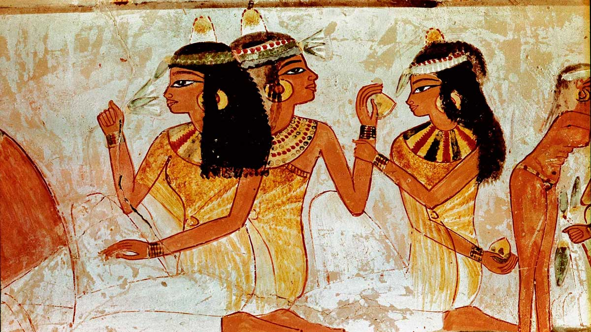

La historia de las uñas y la manicura se remonta a más de 5,000 años atrás, cuando el cuidado y color de las uñas eran símbolos de poder, estatus y belleza en civilizaciones como Egipto, Babilonia y China. Desde entonces, esta práctica evolucionó de rituales sociales y religiosos a una forma moderna de expresión artística y estética.
Orígenes antiguos 🏺
Egipto (3500 a.C.):
Las uñas eran un símbolo de jerarquía, Cleopatra teñía sus uñas con henna rojiza como signo de poder. Los tonos dorados y vivos eran exclusivos de la realeza, mientras que las clases bajas usaban colores claros o naturales. El cuidado corporal era parte de la religión y la medicina, no solo de la estética.

Babilonia (hace más de 5,000 años):
Los guerreros pintaban sus uñas antes de la batalla. Usaban pigmentos oscuros como kohl o polvos minerales. El color indicaba rango militar: los líderes llevaban tonos más oscuros, los soldados tonos claros.
China imperial (3000 a.C. Dinastía Ming y Zhou):
En la corte imperial, las uñas eran un símbolo de estatus y refinamiento. Las emperatrices y nobles usaban esmaltes de colores vibrantes, mientras que las clases sociales más bajas se limitaban a tonos naturales.
De ritual a cuidado personal 💅
En la Edad Media y el Renacimiento, el cuidado de las uñas se mantuvo, aunque en algunos periodos se consideró superficial. En el siglo XIX, la manicura se profesionalizó con la invención del palillo de naranjo, y aparecieron las primeras herramientas como tijeras y limas. En 1917, la marca Cutex lanzó el primer esmalte líquido, y en 1932, Revlon revolucionó el mercado con esmaltes pigmentados que ofrecían una amplia gama de colores.
Siglo XX y Actualidad 🌈
Durante el siglo XX la manicura pasó de ser un cuidado básico a convertirse en una industria global y un arte de expresión personal.
En 1917 la marca Cutex lanzó el primer esmalte líquido, y en 1932 Revlon revolucionó el mercado con esmaltes pigmentados que ofrecían una amplia gama de colores.
En la década de 1970, la manicura francesa se popularizó, y en los años 80 y 90 surgieron técnicas como el acrílico y el gel, permitiendo diseños más elaborados. Hoy en día, la manicura es una forma de arte y moda, con tendencias que cambian constantemente y una gran variedad de estilos, colores y técnicas disponibles para todos.